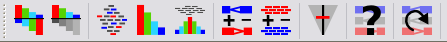
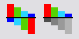
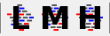
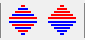
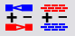
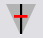
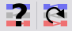

The Toolbar

The toolbar is a convenient way to access commonly used functions
which you can also access via the main menu or keyboard shortcuts.
- These
buttons allow you to change the origin on the data tracks between a
positive only scale and a positive and negative scale.
 These buttons
allow you to change the data tracks between showing just reads, just
probes or both reads and probes
These buttons
allow you to change the data tracks between showing just reads, just
probes or both reads and probes- These buttons
allow you to change the density with which reads are packed into the
chromosome view
- These buttons
allow you to change whether forward and reverse reads are packed together
or separately in the chromosome view
- These
buttons allow you to change the list of genome annotation and data
tracks which are displayed in the chromosome view
- This
lets you change the data zoom level
- These buttons
bring up either the Find Feature, or Goto Position search tools